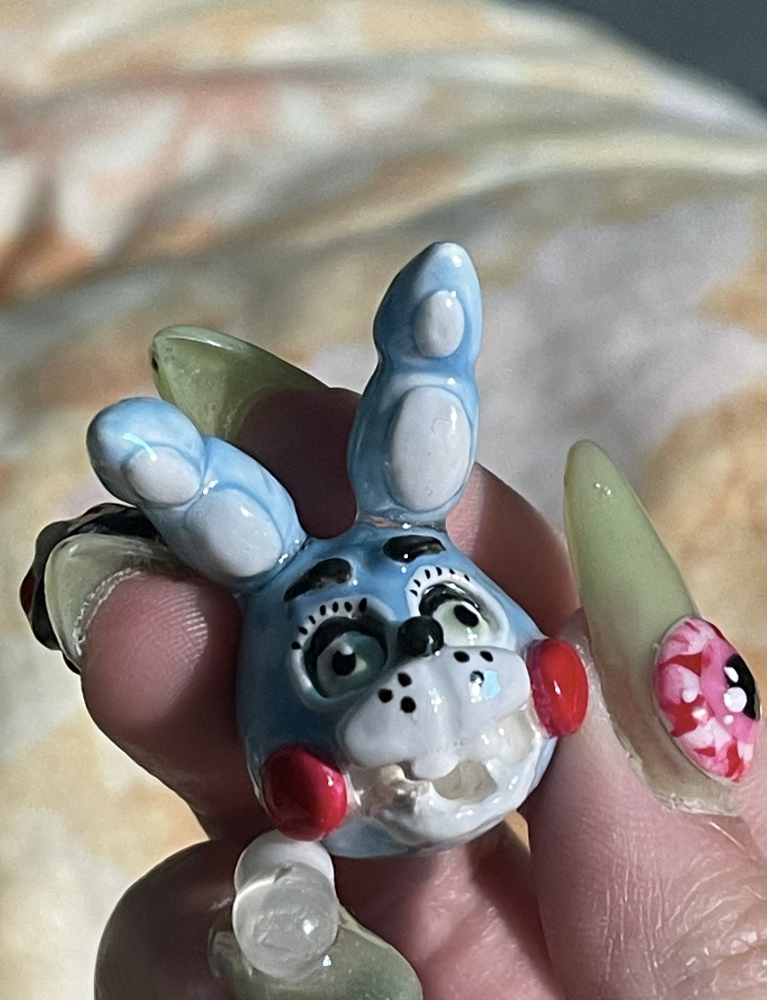
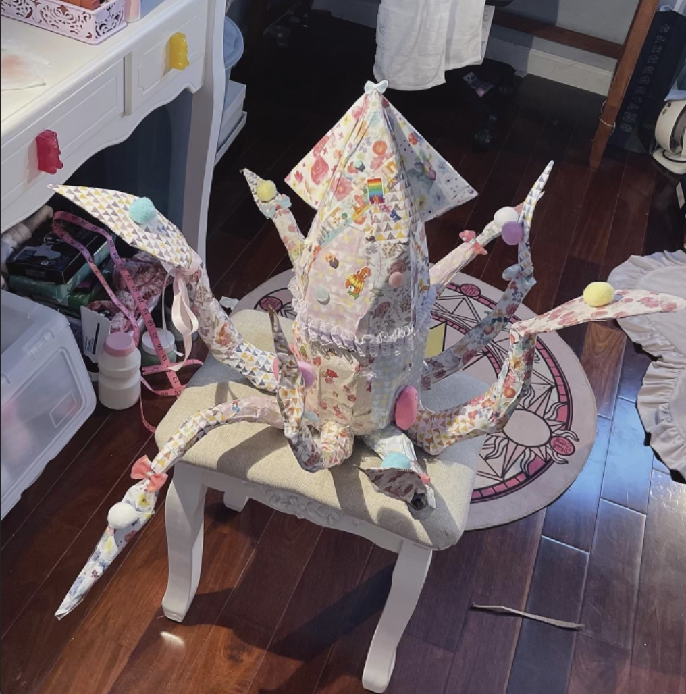
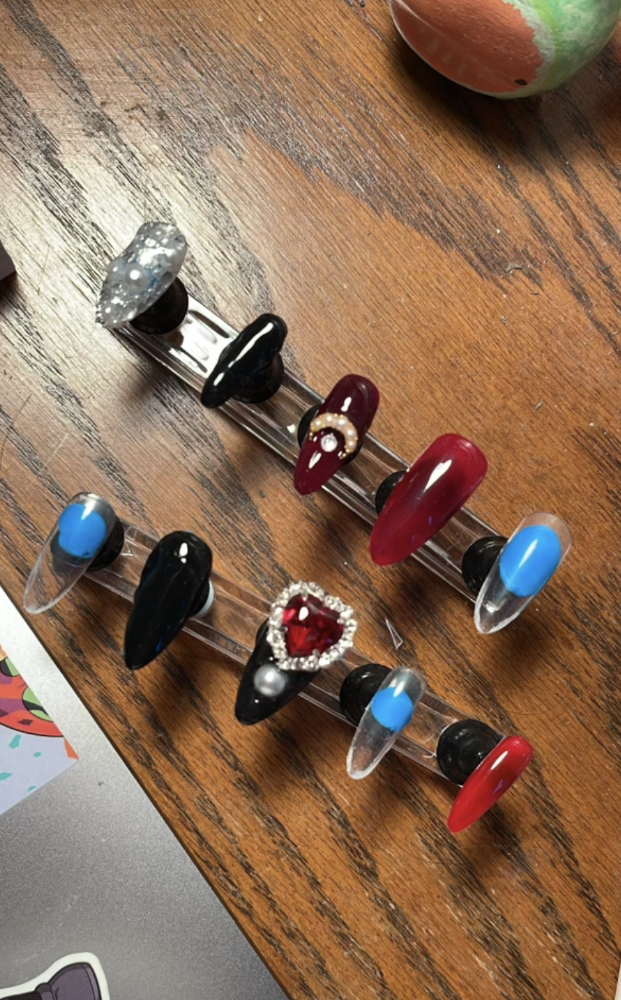
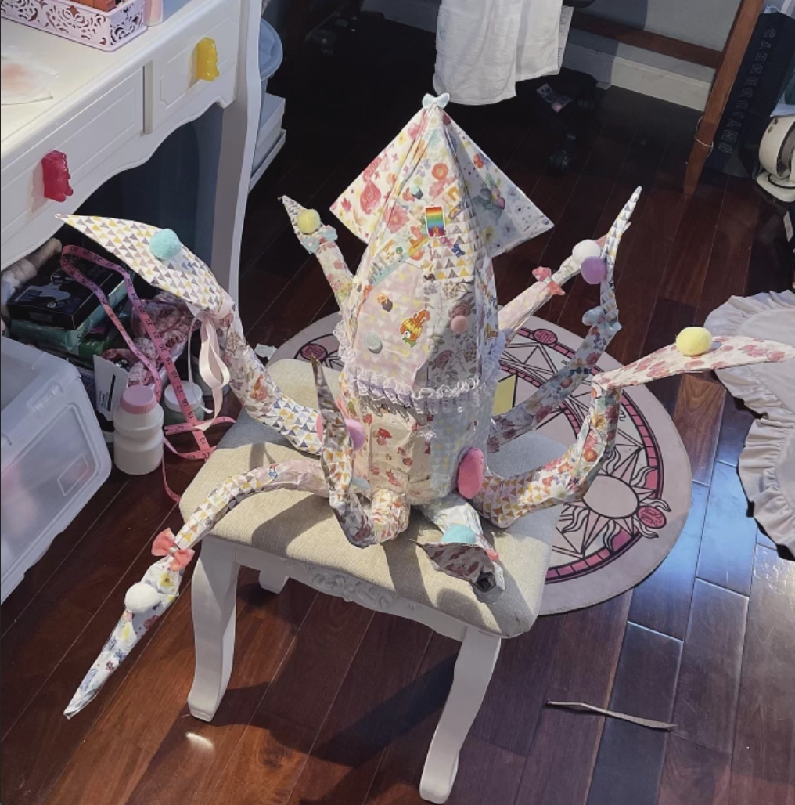
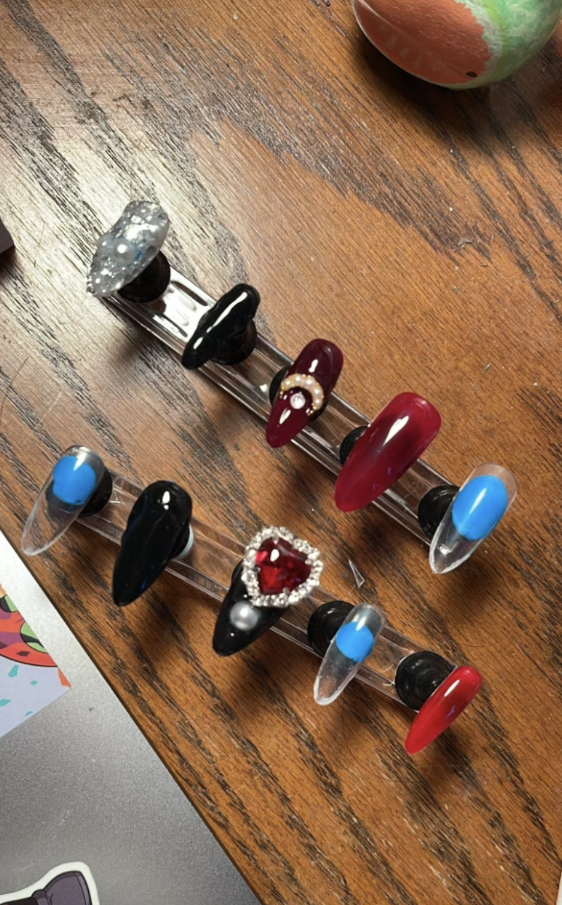

Portfolio






Hello, my name is Vivian Wu and I am a California sculptor and 3D artist. I am currently and art student at UCR building a portfolio of current abilities as well as newly developed skills as I study. I have a minor in science as I am curious about the world of innovation through biology and mathematics. I currently run a self operated online shop containing my designs in which i sell prints and original work. If it is a three dimensional commission that customers want, I am able to work with it easily. After school, I hope to find a job doing something creative and meaningful as an artist.
Some of my mediums are physical and others are digital. For example, I have experience with physical sculpting since I was 7 as well as digital sculpting since I was 10. I used a software called Tinkercad to learn 3D printing and sculpting skills. Physical sculpting mediums that I work with include cardboard, paper, clay, and perhaps a mixture of everything together. As far as Inspirations and talking points within my works, I like to create sculptures of what is real and what is intangible. I enjoy the surrealist style when it comes to purely aesthetic works. When it comes down to creative yet practical works, I have created bionic arms and legs which are designed to look as realistic as possible. Oftentimes, I create bionic body parts that can be worn by actors on the set of a movie. Practical effects are important for the small details that are not as realistic with the use of digital editing and CGI. This is where practical effects come into play when it concerns a bigger picture of creative works such as movies and TV shows. In my online shops, I would sell digital prints of my larger works or perhaps original work that is easily shipped in the mail. I used to make 3D nail sets with detailed sculptures on the apex of the nail for people who enjoy a creative fashion style. This business sold well until I closed that line of products after going to college. I don't usually paint on a canvas as most 2 two-dimensional artists like to do, instead I paint designs onto three-dimensional surfaces that allow for a more lively appearance of my designs. Sometimes, I use other forms of material to color my works such as the Giant Paper Squid created in 2022 which was a 3 foot tall cardboard arrowhead squid covered in vibrant and patterned origami paper and lace. It was meant to be a surrealist work that combined the oddities of nature with the contrasting unnatural beauty of manmade designs.
I am open to working in any field as long as I am able to keep a sense of creative freedom. I believe it is what I am meant to do and I will continue to study it throughout my time as an undergrad at the University of California, Riverside. With an interest in a creative line of work since I was young, I am looking to pursue this job until I am happy with where I am.
• Developed 3D models of compact AC unit
• Exterior design ideas for commercial buildings
• Experience with procreate, TinkerCad, Physical sculping and molding
• Responsible for compromising on designs with clients
• comissioning artist and nail technician
• worked with all members of the public
• City street cleanup
• Working with children to teach a skill
• volunteering at nursing homes during covid